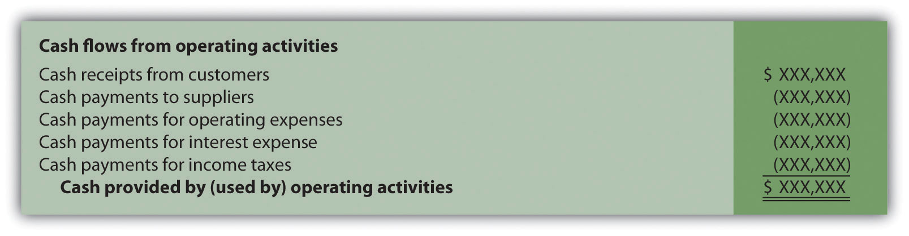
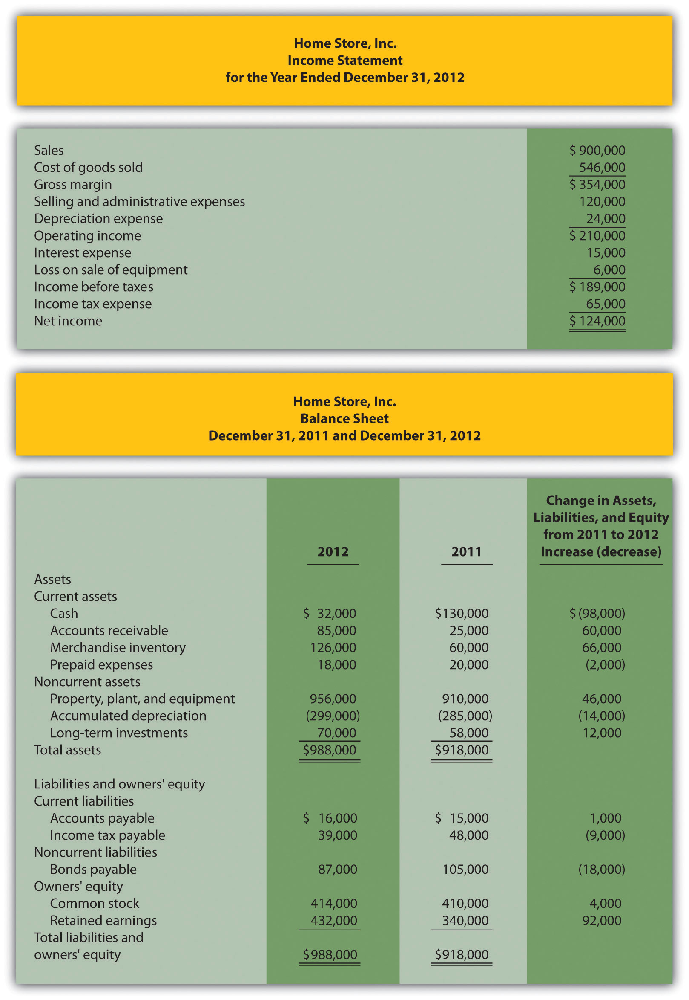
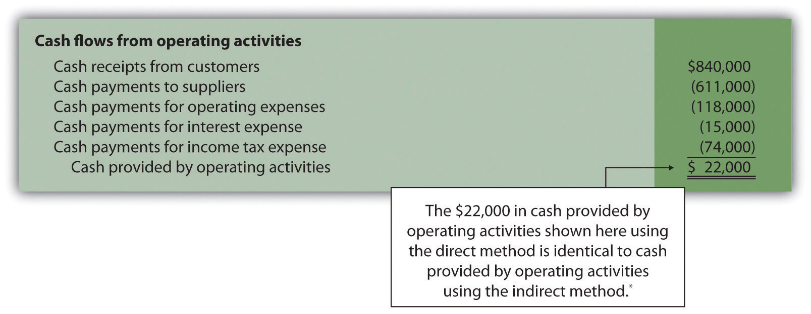
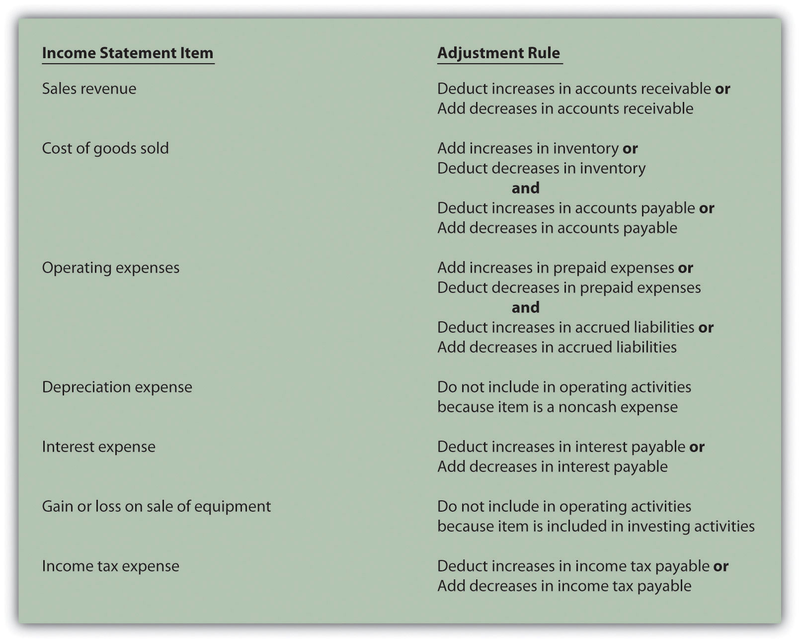

Question: The same four steps apply to preparing a statement of cash flows using the direct method as with the indirect method. The only difference is how the operating activities section is presented in step 1; all other steps are the same as presented in the chapter. Although presentation of the operating activities section using the direct method differs from the indirect method, the end result is exactly the same. How does step 1 differ using the direct method?
Answer: Rather than adjusting net income from an accrual basis to a cash basis using the indirect method, the direct methodA statement of cash flows method that makes adjustments to each income statement revenue and expense line item, thereby converting each item to a cash basis. The resulting cash payments and cash receipts are used to calculate cash provided by operating activities. simply presents the income statement on a cash basis. The format of the operating activities section using the direct method is presented in Figure 12.10 "Operating Activities Format Using the Direct Method".
Figure 12.10 Operating Activities Format Using the Direct Method
The first item shown in Figure 12.10 "Operating Activities Format Using the Direct Method", cash receipts from customers, is revenue (or sales) on a cash basis. The second item, cash payments to suppliers, is cost of goods sold on a cash basis. The third item, cash payments for operating expenses (also called selling and administrative expenses), is operating expenses on a cash basis. The fourth item, cash payments for interest expense, is interest expense on a cash basis. And the fifth item, cash payments for income taxes, is income tax expense on a cash basis. Cash receipts minus cash payments results in cash provided by operating activities.
Adjustments must be made to each income statement item to convert income statement information from an accrual basis to a cash basis. These adjustments will be described next using the same information for Home Store, Inc., presented earlier in the chapter. The income statement and balance sheet for Home Store, Inc., are presented again in Figure 12.11 "Income Statement and Balance Sheet (Home Store, Inc.)". We will start at the top of the income statement with sales and work our way down item-by-item making adjustments to convert each item to a cash basis.
Figure 12.11 Income Statement and Balance Sheet (Home Store, Inc.)
Question: How are sales on an accrual basis converted to sales on a cash basis?
Answer: Sales of $900,000 shown on the income statement do not represent cash collected from sales. The adjustment rule used to convert sales to cash receipts from customers is as follows: increases in accounts receivable are deducted from sales revenue, and conversely, decreases in accounts receivable are added to sales revenue. Since accounts receivable for Home Store, Inc., increased $60,000, a deduction of $60,000 from sales revenue must be taken to find cash receipts from customers. Thus cash receipts from customers totaled $840,000 (= $900,000 sales − $60,000 increase in accounts receivable). The accounts receivable T-account shown in the following further clarifies this concept.
Here’s how sales revenue on a cash basis appears in the operating activities section of the statement of cash flows for Home Store, Inc.:
Question: How is cost of goods sold on an accrual basis converted to cost of goods sold on a cash basis?
Answer: Two adjustments must be made to cost of goods sold to calculate cash paid to suppliers. First, increases in inventory are added to cost of goods sold, and conversely, decreases in inventory are deducted from cost of goods sold. Since inventory for Home Store, Inc., increased $66,000, cost of goods sold is increased $66,000. Second, increases in accounts payable are deducted from cost of goods sold, and conversely, decreases in accounts payable are added to cost of goods sold. Since accounts payable increased $1,000, cost of goods sold is decreased $1,000. These 2 adjustments result in cash paid to suppliers of $611,000 (= $546,000 cost of goods sold + $66,000 increase in inventory − $1,000 increase in accounts payable).
Here’s how cost of goods sold on a cash basis appears in the operating activities section of the statement of cash flows for Home Store, Inc.:
Question: How are operating expenses on an accrual basis converted to operating expenses on a cash basis?
Answer: Two adjustments must be made to operating expenses (also called selling and administrative expenses) to calculate cash payments for operating expenses. First, increases in prepaid expenses are added to operating expenses, and conversely, decreases in prepaid expenses are deducted from operating expenses. Since prepaid expenses for Home Store, Inc., decreased $2,000, operating expenses are decreased $2,000. Second, increases in accrued liabilities are deducted from operating expenses, and conversely, decreases in accrued liabilities are added to operating expenses. Home Store, Inc., does not have any accrued liabilities and, therefore, no adjustment is necessary for accrued liabilities. The 1 adjustment to operating expenses at Home Store, Inc., results in cash payments for operating expenses of $118,000 (= $120,000 selling and administrative expenses − $2,000 decrease in prepaid expenses).
Here’s how operating expenses on a cash basis appears in the operating activities section of the statement of cash flows for Home Store, Inc.:
Question: How is depreciation expense handled when using the direct method?
Answer: Since depreciation is a noncash expense, it is not included in the statement of cash flows using the direct method.
Question: How is interest expense on an accrual basis converted to interest expense on a cash basis?
Answer: Interest expense of $15,000 shown on the income statement does not necessarily represent cash paid for interest expense. The adjustment rule used to convert interest expense to cash payments for interest expense is as follows: increases in interest payable are deducted from interest expense, and conversely, decreases in interest payable are added to interest expense. Since Home Store, Inc., had no interest payable this year or last year, no adjustment to interest expense is necessary.
Here’s how interest expense on a cash basis appears in the operating activities section of the statement of cash flows for Home Store, Inc.:
Question: How is the loss on sale of equipment handled when using the direct method?
Answer: Because the loss on sale of equipment is included as part of the proceeds from the sale of equipment in the investing activities section, this item is not included in the operating activities section. This holds true for both the direct and indirect methods.
Question: How is income tax expense on an accrual basis converted to income tax expense on a cash basis?
Answer: Income tax expense of $65,000 shown on the income statement does not represent cash paid for income taxes. The adjustment rule used to convert income tax expense to cash payments for income taxes is: Increases in income taxes payable are deducted from income tax expense, and conversely, decreases in income taxes payable are added to income tax expense. (The same rules apply to companies that have deferred income taxes.) Since income taxes payable decreased $9,000, income tax expense is increased $9,000. Thus cash payments for income taxes totaled $74,000 (= $65,000 income tax expense + $9,000 decrease in income taxes payable).
Here’s how income tax expense on a cash basis appears in the operating activities section of the statement of cash flows for Home Store, Inc.:
Question: What does the completed operating activities section for Home Store, Inc., look like using the direct method?
Answer: The operating activities section for Home Store, Inc., is shown in Figure 12.12 "Operating Activities Section Using the Direct Method (Home Store, Inc.)". Notice that cash provided by operating activities of $22,000 in Figure 12.12 "Operating Activities Section Using the Direct Method (Home Store, Inc.)" (using the direct method) matches cash provided by operating activities in Figure 12.5 "Operating Activities Section of Statement of Cash Flows (Home Store, Inc.)" (using the indirect method). The direct and indirect methods of presenting the operating activities section of the statement of cash flows yield the exact same results. Also note that the investing and financing activities do not change using the direct method.
Figure 12.12 Operating Activities Section Using the Direct Method (Home Store, Inc.)
*As shown in Figure 12.5 "Operating Activities Section of Statement of Cash Flows (Home Store, Inc.)".
Figure 12.13 "Adjustment Rules for the Direct Method" summarizes the rules used to convert income statement line items to a cash basis. Review these rules carefully before working Note 12.40 "Review Problem 12.9".
Figure 12.13 Adjustment Rules for the Direct Method
Using the information presented for Phantom Books in Note 12.21 "Review Problem 12.4", prepare the operating activities section of the statement of cash flows using the direct method. Follow the format presented in Figure 12.12 "Operating Activities Section Using the Direct Method (Home Store, Inc.)", and refer to the adjustment rules in Figure 12.13 "Adjustment Rules for the Direct Method".
Solution to Review Problem 12.9
The operating activities section of the statement of cash flows for Phantom Books using the direct method is presented as follows. Notice that cash provided by operating activities of $82,000 shown here using the direct method is identical to cash provided by operating activities using the indirect method (shown in the solution to Note 12.21 "Review Problem 12.4").
a $756,000 = $750,000 sales revenue + $6,000 decrease in accounts receivable.
b $560,000 = $546,000 cost of goods sold + $13,000 increase in inventory + $1,000 decrease in accounts payable.
c $75,000 = $79,000 operating expenses − $4,000 decrease in prepaid expenses.
d Since no interest payable balances exist this year or last year, the interest expense of $11,000 is the same as cash payments for interest expense.
e $28,000 = $30,000 income tax expense − $2,000 increase in income tax payable.
Questions
Brief Exercises
Evaluating Cash Flows at Home Store, Inc. Refer to the dialogue at Home Store, Inc., presented at the beginning of the chapter and the follow-up dialogue after Note 12.25 "Review Problem 12.7".
Required:
Classifying Cash Flows. Identify whether each of the following items would appear in the operating, investing, or financing activities section of the statement of cash flows. Briefly explain your answer for each item.
Operating Activities Section Using the Indirect Method. The following income statement and current sections of the balance sheet are for Donzi, Inc.
Required:
Using the indirect method, prepare the operating activities section of the statement of cash flows for Donzi, Inc., for the year ended December 31, 2012. Use the format presented in Figure 12.5 "Operating Activities Section of Statement of Cash Flows (Home Store, Inc.)".
(Appendix) Operating Activities Section Using the Direct Method. The following income statement and current sections of the balance sheet are for Donzi, Inc. (this is the same information as the previous brief exercise).
Required:
Using the direct method, prepare the operating activities section of the statement of cash flows for Donzi, Inc., for the year ended December 31, 2012. Use the format presented in Figure 12.12 "Operating Activities Section Using the Direct Method (Home Store, Inc.)".
Investing Activities Section. The following information is from the noncurrent asset portion of Santana, Inc.’s balance sheet.
The following activities occurred during 2012:
Required:
Prepare the investing activities section of the statement of cash flows for Santana, Inc., for the year ended December 31, 2012. Use the format presented in Figure 12.6 "Investing Activities Section of Statement of Cash Flows (Home Store, Inc.)".
Financing Activities Section. The following information is from the noncurrent liabilities and owners’ equity portions of Canton Company’s balance sheet.
The following activities occurred during 2012:
Required:
Prepare the financing activities section of the statement of cash flows for Canton Company for the year ended December 31, 2012. Use the format presented in Figure 12.7 "Financing Activities Section of Statement of Cash Flows (Home Store, Inc.)".
Cash Flow Measures. The selected information in the following is from Diaz Company’s financial records for the most recent fiscal year.
| Current assets | $600,000 |
| Current liabilities | $250,000 |
| Cash provided by operating activities | $700,000 |
| Net income | $300,000 |
| Capital expenditures | $550,000 |
Required:
Calculate Diaz Company’s
Exercises: Set A
Classifying Cash Flows. Identify whether each of the following items would appear in the operating, investing, or financing activities section of the statement of cash flows. Briefly explain your answer for each item.
Operating Activities Section Using the Indirect Method. The following income statement and current sections of the balance sheet are for Capstone, Inc.
Required:
(Appendix) Operating Activities Section Using the Direct Method. The following income statement and current sections of the balance sheet are for Capstone, Inc. (this is the same information as the previous exercise).
Required:
Investing Activities Section. The following information is from the noncurrent asset portion of Caldera, Inc.’s balance sheet.
The following activities occurred during 2012:
Required:
Financing Activities Section. The following information is from the noncurrent liabilities and owners’ equity portions of Flash, Inc.’s balance sheet.
The following activities occurred during 2012:
Required:
Operating Activities Section Using the Indirect Method and Cash Ratios. The following data are for Cycle Company.
Required:
Calculate the following cash measures:
Exercises: Set B
Classifying Cash Flows. Identify whether each of the following items would appear in the operating, investing, or financing activities section of the statement of cash flows. Briefly explain your answer for each item.
Operating Activities Section Using the Indirect Method. The following income statement and current sections of the balance sheet are for Manor Company.

Required:
(Appendix) Operating Activities Section Using the Direct Method. The following income statement and current sections of the balance sheet are for Manor Company (this is the same information as the previous exercise).
Required:
Investing Activities Section. The following information is from the noncurrent asset portion of Gebhardt Company’s balance sheet.
The following activities occurred during 2012:
Required:
Financing Activities Section. The following information is from the noncurrent liabilities and owners’ equity portions of System, Inc.’s balance sheet.
The following activities occurred during 2012:
Required:
Operating Activities Section Using the Indirect Method and Cash Ratios. The following data are for Mills Company.
Required:
Calculate the following cash measures:
Problems
Classifying Cash Flows. Big Sky, Inc., had the following transactions during 2012:
Required:
Classify each transaction as one of the following: operating activity, investing activity, financing activity, or noncash transaction. Briefly explain your answer for each item.
Prepare a Statement of Cash Flows, Indirect Method. Glenbrook Company’s most recent balance sheet, income statement, and other important information for 2012 are presented as follows.
Additional data for 2012 are as follows:
Required:
(Appendix) Prepare a Statement of Cash Flows, Direct Method. Refer to the information for Glenbrook Company presented in the previous problem.
Required:
Prepare and Analyze a Statement of Cash Flows, Indirect Method. Travel Supply, Inc.’s most recent balance sheet, income statement, and other important information for 2012 are presented as follows.

Additional data for 2012 are as follows:
Required:
Prepare a Statement of Cash Flows, Indirect Method; Analyze Using Cash Ratios. Nolan Company’s most recent balance sheet, income statement, and other important information for 2012 are presented as follows.
Additional data for 2012 are as follows:
Required:
Calculate the following cash measures:
(Appendix) Prepare a Statement of Cash Flows (Direct Method); Analyze Using Cash Ratios. Refer to the information for Nolan Company presented in the previous problem.
Required:
Calculate the following cash measures:
Prepare and Analyze a Statement of Cash Flows, Indirect Method and Direct Method. Ritz Company’s most recent balance sheet, income statement, and other important information for 2012 are presented as follows.
Additional data for 2012 are as follows:
Required:
One Step Further: Skill-Building Cases
Internet Project: Statement of Cash Flows. Using the Internet, find the most recent annual report for a company of your choice. Print the statement of cash flows and include it with your response to the following requirements.
Required:
Group Activity: Analyzing General Motors Statement of Cash Flows.The following information is from the consolidated statement of cash flows for General Motors (GM) for the year ended December 31, 2005 (in millions).
Required:
An investment advisor recently reviewed GM’s statement of cash flows and balance sheet and stated: “GM is doing great! They are sitting on cash of more than $30,000,000,000. There is no cash flow problem with this company!” In groups of two to four students, decide whether you agree with this statement. Support your conclusion with an analysis of GM’s cash flows.
Comprehensive Case
Ethics: Manipulating Data to Reach Target Cash Flow. Country Market, Inc., sells food and beverage products at its five retail stores. The company’s fiscal year ends on December 31. The company’s president and CEO, Jean Williams, just received a draft of the statement of cash flows from the controller, Stan Walker. Jean is very interested in the results since a significant part of her annual bonus depends on generating at least $400,000 in cash from operating activities. A summary of the statement is provided in the following:
Becky Swanson, the chief financial officer (CFO) for Country Market, is approached by Jean:
| Jean: | Becky, have you seen the statement of cash flows? |
| Becky: | No, not yet. Last I heard Stan was just about done with it. |
| Jean: | He just dropped off a copy for my review. |
| Becky: | Excellent. How does it look? |
| Jean: | Overall it looks fine, but something must be wrong with the operating activities number. I assumed it would be well above $400,000. Can you take a look at it and make sure we exceed $400,000? |
| Becky: | I’ll do what I can. |
| Jean: | Great. I knew I could depend on you. |
| Shortly after this discussion, Becky returned with revised numbers: | |
| Becky: | Jean, here is the corrected statement of cash flows (see as follows). I was able to reclassify a portion of cash received from the sale of long-term investments to the operating activities section to get to $403,000. |
| Jean: | Excellent! Thanks, Becky, I knew you could do it! |
Required: